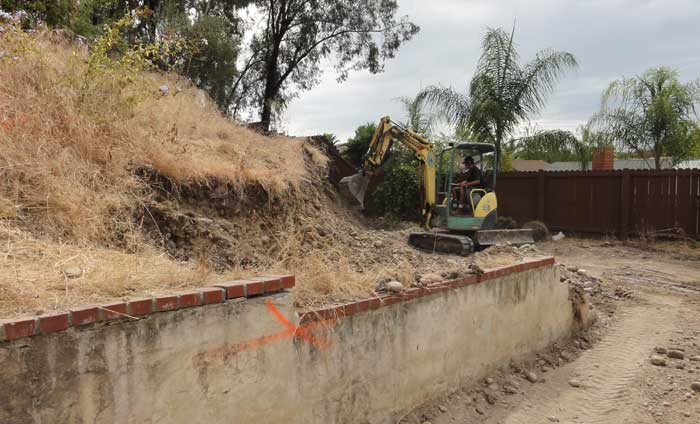
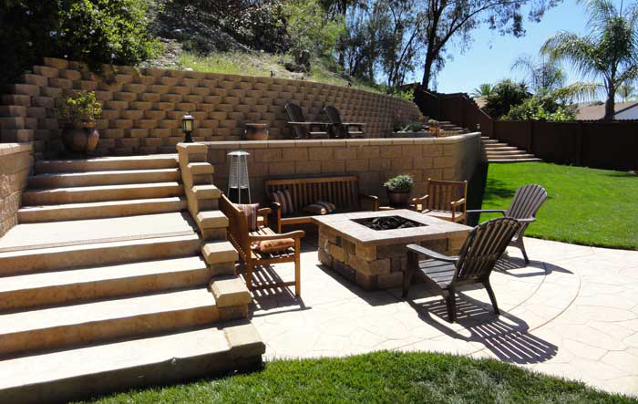

General Engineering Contractor · Class A · San Diego County
Underground utilities, site grading and excavation. Class A licensed, Veriforce qualified for SDG&E gas work, and digging San Diego County since 2003.
Veriforce operator qualification for SDG&E, on top of a Class A general engineering license. Bonded and insured.


Free estimates. Mon–Sat, 7a–5p.